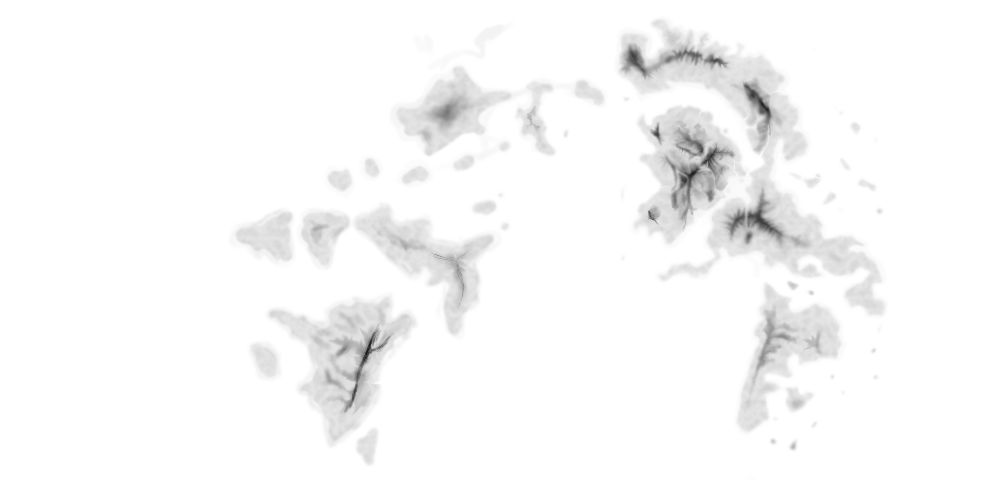

拉埃拉德 简介¶

天文基础¶
星系¶
- 星系构成与太阳系相仿
- 该行星对应一个太阳与一个月亮
- 该行星有[魔力星环]
行星¶
- 质量与地球相仿
- 体积与地球相仿
魔法¶
原理¶
- 假设在“现实”之外，存在“一个”高维空间。
- “快照”的形式：现实世界在高维空间的一个映射。这个映射是唯一且可逆的，不仅记录空间，同时也记录了时间。
- 魔法的发生：施法者“打开”一个“通道”，使“现实快照”向“该快照”“坍缩”。“坍缩”过程中，有能量、波、物质的“交换”。
- 每隔一段时间，当天文尺度上“现实”，“旋转”到与高维空间的某个映射接近时，出现魔法环。基于上一条的魔法形成基础，此时大多数魔法会失效。
形式¶
- 主要形式
- 附魔
- 祝福
- 稀有形式
- 预言
- 通灵
- 魔法的实施依赖于要素的获取，所以施展稳定魔法的关键是每次都能找到所需要的“要素”。
机制¶
- “魔法师”是那些能够看见“快照”的人。
- 施法者的能力与他能观察“快照”的能力有关。
- 这种观察高维空间的能力十分稀有，仅在高维空间映射和现实世界有某种程度上的重合时，新生的婴儿有概率能够获得这种能力。
- 这种能力疑似能通过血统遗传，但是样本太少，没有办法总结出规律。
- 能够观察高维空间的人，不一定能够对要素进行精准定位；能够定位的人，不一定能够观察到足够多的要素。即便同时擅长两者，也存在无法打开现实与高维世界间的通道的可能。
- 冥想似乎能够加强与高维空间之间的联系。
- 例子：假设当前我们要对某把剑进行火焰附加
- 现实：
- 剑存在在现实
- 魔法师：
- 窥探并分析“快照”
- 打开通道
- “快照”：
- “快照”是静止不变的
- 为了在剑上附加火焰，需要在“快照”里，找到能构成火焰的“要素”，进行绑定，打开“通道”，从而打开火焰。
- 现实：
- 形式上仍然与一般的魔法世界无异，但依照这种设定，魔法的实施依赖与现实宇宙与“快照”的相对关系，所以魔法的具体效果和强度会有所不同。
- 在这个世界中，可以通过观星预测现实与“快照”的相对位置。
- 可以存在没有魔法技术的文明。
- 为科幻创作留出空间。
灵感来源：阿西莫夫《神们自己》
文化基础¶
历史¶
%%{init: { 'logLevel': 'debug', 'theme': 'dark' } }%%
timeline
title 拉埃拉德时间线
section 神话时代
BC 20 : 拉埃拉德原始语的记录
section 灾变时代
早期 : 冰川迁徙
: 人类族群分散
晚期 : 地质活动趋于稳定
: 原始聚落出现
section 中古时代
早期 : 城邦时代
晚期 : 早期帝国时代神话（石器）[porur]¶
概况¶
- 行星的温热期。
- 海平面较高，陆地少。
事件¶
- 人类出现在神话纪元结束的十万年前。
- 神话纪元结束前 20 年，laaerad 原始语首次以文字的形式被记录，记载了大约两百词，刻在了石头上。
- [Porurka] 神话纪元的结束。
结束¶
- 神话纪元结束于某位大手子，发现了“快照”的存在，但是鉴于“该快照”截取的是宇宙早期的图景，打开通道后，大量水被冻结。海平面迅速下降，造成一系列灾害，地壳运动。神话时代结束。
灾变（大冰川）[glios]¶
概况¶
- 地质活动剧烈
- 大约持续了 1000 年。
- 海平面不断下降。
- 出现冰川，北极形成冻土层。
- 人类在这个过程中散落到各个大陆，原始语分化
事件¶
结束¶
- 剧烈地质活动的结束
中古¶
概况¶
- 主要农耕文明形成，鲜有交流。
- 各文明缓慢发展，大陆的各部分逐渐被探明。
- 次生文明的产生。
- 魔法的再度出现。
- 青铜->铁器。
文明¶
语言¶
graph TD
A[拉埃拉德原始语]
J[古北境语]
subgraph 东北语系
B[东北拉埃拉德语]
C[古<ruby>咕洛<rt>Glöme</rt></ruby>语]
D[拉普里奥语]
E[古<ruby>图斯克<rt>Trusk</rt></ruby>语]
F[中古<ruby>图斯克<rt>Trusk</rt></ruby>语]
K[中古<ruby>咕洛<rt>Glöme</rt></ruby>语]
J -.-> C
end
H[依荧语]
I[<ruby>洛斯<rt>Loos</rt></ruby>语]
G[阔台语]
D -.-> F
E --> F
C --> K
A --> H
A --> I
A --> G
C -.-> F
B --> C
B --> D
B --> E
A --> B